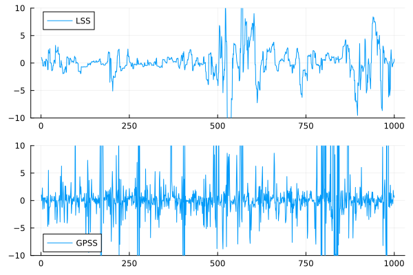

Gibbsian Polar Slice Sampling
Introduction
Gibbsian polar slice sampling (GPSS) is a recent vector-valued slice sampling algorithm proposed by P. Schär, M. Habeck, and D. Rudolf[SHR2023]. It is an computationally efficient variant of polar slice sampler previously proposed by Roberts and Rosenthal[RR2002]. Unlike other slice sampling algorithms, it operates a Gibbs sampler over polar coordinates, reminiscent of the elliptical slice sampler (ESS). Due to the involvement of polar coordinates, GPSS only works reliably on more than one dimension. However, unlike ESS, GPSS is applicable to any target distribution.
Description
For a $d$-dimensional target distribution $\pi$, GPSS utilizes the following augmented target distribution:
\[\begin{aligned} p(x, T) &= \varrho_{\pi}^{(0)}(x) \varrho_{\pi}^{(1)}(x) \, \operatorname{Uniform}\left(T; 0, \varrho^1(x)\right) \\ \varrho_{\pi}^{(0)}(x) &= {\lVert x \rVert}^{1 - d} \\ \varrho_{\pi}^{(1)}(x) &= {\lVert x \rVert}^{d-1} \pi\left(x\right) \end{aligned}\]
As described in Appendix A of the GPSS paper, sampling from $\varrho^{(1)}(x)$ in polar coordinates magically targets the augmented target distribution.
In a high-level view, GPSS operates a Gibbs sampler in the following fashion:
\[\begin{aligned} T_n &\sim \operatorname{Uniform}\left(0, \varrho^{(1)}\left(x_{n-1}\right)\right) \\ \theta_n &\sim \operatorname{Uniform}\left\{ \theta \in \mathbb{S}^{d-1} \mid \varrho^{(1)}\left(r_{n-1} \theta\right) > T_n \right\} \\ r_n &\sim \operatorname{Uniform}\left\{ r \in \mathbb{R}_{\geq 0} \mid \varrho^{(1)}\left(r \theta_n\right) > T_n \right\} \\ x_n &= \theta_n r_n, \end{aligned}\]
where $T_n$ is the usual acceptance threshold auxiliary variable, while $\theta$ and $r$ are the sampler states in polar coordinates. The Gibbs steps on $\theta$ and $r$ are implemented through specialized shrinkage procedures.
The only tunable parameter of the algorithm is the size of the search interval (window) of the shrinkage sampler for the radius variable $r$.
A limitation of the current implementation of GPSS is that the acceptance rate exhibits a heavy tail. That is, occasionally, a single transition might take an excessive amount of time.
The kernel corresponding to this sampler is defined on an augmented state space and cannot directly perform a transition on $x$. This also means that the corresponding kernel is not reversible with respect to $x$.
Interface
SliceSampling.GibbsPolarSlice — TypeGibbsPolarSlice(w; max_proposals)Gibbsian polar slice sampling algorithm by P. Schär, M. Habeck, and D. Rudolf [SHR2023].
Arguments
w::Real: Initial window size for the radius shrinkage procedure.
Keyword Arguments
w::Real: Initial window size for the radius shrinkage proceduremax_proposals::Int: Maximum number of proposals allowed until throwing an error (default:10000).
By the nature of polar coordinates, GPSS only works reliably for targets with dimension at least $d \geq 2$.
The initial window size w must be set at least an order of magnitude larger than what is sensible for other slice samplers. Otherwise, a large number of rejections might be experienced.
When initializing the chain (e.g. the initial_params keyword arguments in AbstractMCMC.sample), it is necessary to inialize from a point $x_0$ that has a sensible norm $\lVert x_0 \rVert > 0$, otherwise, the chain will start from a pathologic point in polar coordinates. This might even result in the sampler getting stuck in an infinite loop. (This can be prevented by setting max_proposals.) If $\lVert x_0 \rVert \leq 10^{-5}$, the current implementation will display a warning.
For Turing users: Turing might change initial_params to match the support of the posterior. This might lead to $\lVert x_0 \rVert$ being small, even though the vector you passed toinitial_params has a sufficiently large norm. If this is suspected, simply try a different initialization value.
Demonstration
As illustrated in the original paper, GPSS shows good performance on heavy-tailed targets despite being a multivariate slice sampler. Consider a 10-dimensional Student-$t$ target with 1-degree of freedom (this corresponds to a multivariate Cauchy):
using Distributions
using Turing
using SliceSampling
using LinearAlgebra
using Plots
@model function demo()
x ~ MvTDist(1, zeros(10), Matrix(I,10,10))
end
model = demo()
n_samples = 1000
latent_chain = sample(model, externalsampler(LatentSlice(10)), n_samples; initial_params=ones(10))
polar_chain = sample(model, externalsampler(GibbsPolarSlice(10)), n_samples; initial_params=ones(10))
l = @layout [a; b]
p1 = Plots.plot(1:n_samples, latent_chain[:,1,:], ylims=[-10,10], label="LSS")
p2 = Plots.plot(1:n_samples, polar_chain[:,1,:], ylims=[-10,10], label="GPSS")
plot(p1, p2, layout = l)
savefig("student_latent_gpss.svg")"/home/runner/work/SliceSampling.jl/SliceSampling.jl/docs/build/student_latent_gpss.svg"
Clearly, GPSS is better at exploring the deep tails compared to the latent slice sampler (LSS) despite having a similar per-iteration cost.